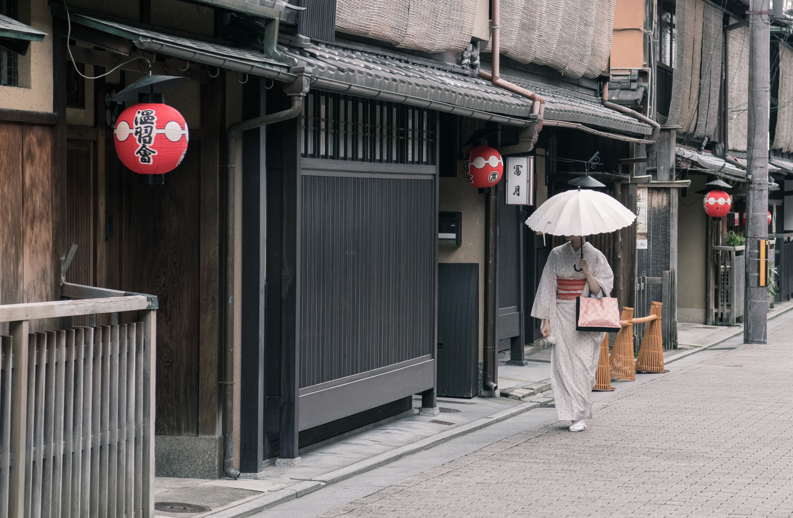

Story of the Month
Kyoto, Japan with Daniel Lee
We were sitting on a park's steps and taking sips from Sapporos we had just bought at a nearby grocery. Quietly admiring Kyoto's cityscape, my friend Tsutomu turned to me and asked: "Do you notice anything?" I wasn't sure what he was driving at so I quickly surveyed the scene before me and answered: "Uhh, it's peaceful?" Smiling and turning back to the scene, he said: "There are no tall buildings here. In some parts of the city, buildings can only be a certain height. Kyoto is a special place for all Japanese so we do what we can to preserve it."
I can see why. After spending a few days there, it isn't hard to understand its significance. Once the capital of Japan, Kyoto flourished for centuries as the country's cultural, religious, and economic center. In fact, the word kyoto
literally means "capital city". Though Japan's emperor and legislature have been moved to Tokyo, Kyoto is still thought of as the heart of Japan. After visiting the Atomic Bomb Museum in Nagasaki earlier this year, I learned that Kyoto
was one of the cities shortlisted as a target for the bomb. Though it's unclear as to why it was spared at the last minute, scholars have speculated it may have something to do with its cultural significance. Today, it remains an
important cultural and educational center, housing many of Japan's National Treasures and Important Cultural Properties.
But I didn't have to google all that to understand how important Kyoto is to the Japanese. I didn't even need to hear Tsutomu say it. When you're there, you just feel it. There is a mystique and reverence unique to this place, one that I
haven't felt in other parts of Japan. If you're visiting this country for the first time, then Kyoto needs to be at the top of your itinerary.
Contact Daniel at lee.daniel85@gmail.com
Send us your travel stories and we'll feature one each month!
Notes
- We wish you all a happy new year!
- Unfortunately, my brother became sick and we had to cancel our winter hiking trip.
Plans for future Journeys
Angela's Plans
- Capetown, South Africa 10/6/19
- Paris, France 15/11/19
- Stockholm, Sweden 1/5/20
Veronika's Plans
- Edinburgh, Scotland 20/2/19
- Malbork, Poland 3/4/19
- Berlin, Germany 6/5/19
Latest Blog Entry
Arrival in Moscow
I left Weingarten on December 20th to visit family in Russia for the Holidays. Of course my FlixBus arrived in Ravensburg 40 minutes late so I got to Munich far later than anticipated, but I suppose you should always be prepared for
delays when traveling. Once I arrived at the main bus station in Munich I took a 40 minute long train ride to get to the airport, so I sat back and watched the urban sprawl go by.
Unfortunately though, the delays did not end with the bus because Aeroflot had overbooked the flight by over five people so we stood around waiting for attendants to kick people off the plane. For a while it seemed like I'd be spending
my night in the airport (not the first time it would happen), but I managed to get a spot near a nice enough couple. Too bad though that I didn't land a spot by the window!
When I arrived in Sheremetyevo Airport in Moscow we were driven from one end of the airport to the other, that airport is like a city on its own! My aunt and uncle met me and we took a taxi back to Dmitrov, their home about an hour's drive from Moscow. Like your average Russian, they live in an apartment from the soviet era. Apartments are small but cozy and comfortable, the kitchen being the heart of the home. After some potato piroshkis (a Russian traditional pastry), I went off to rest for the coming morning.
Read full Article